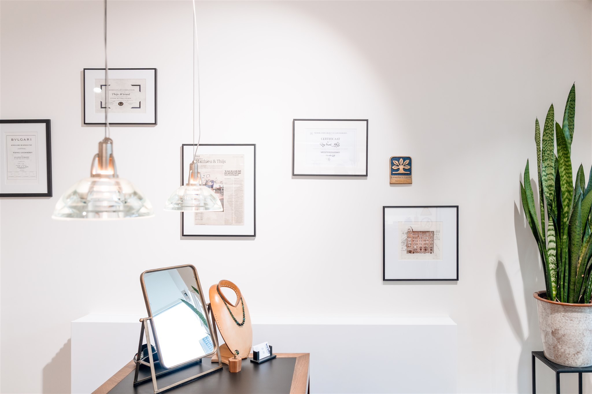
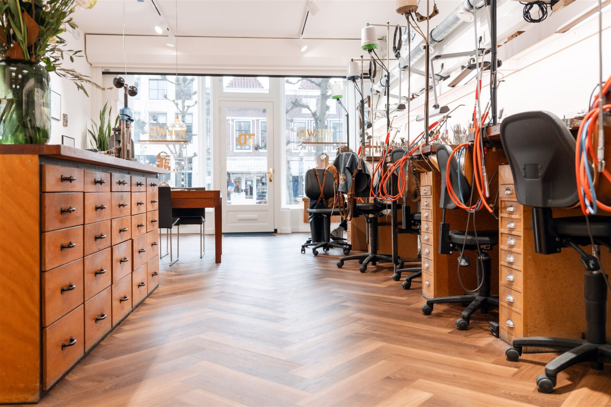
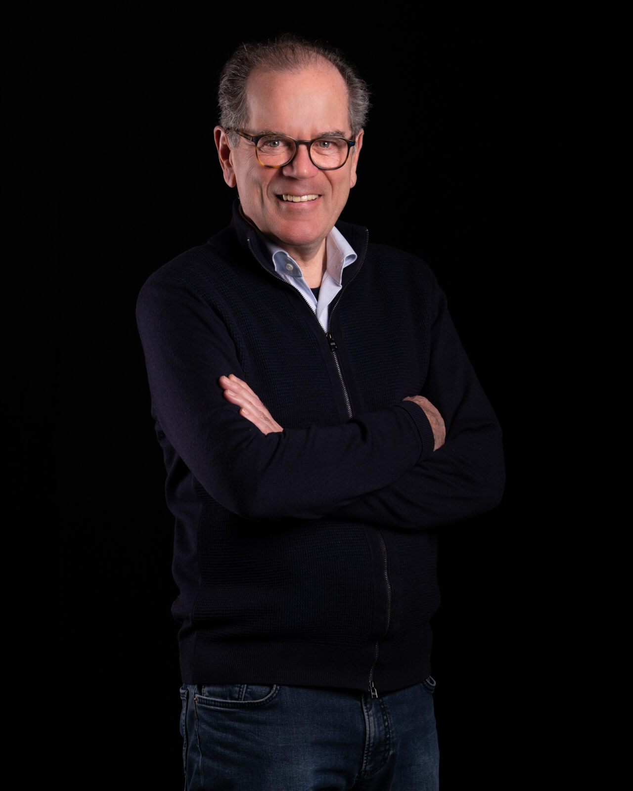
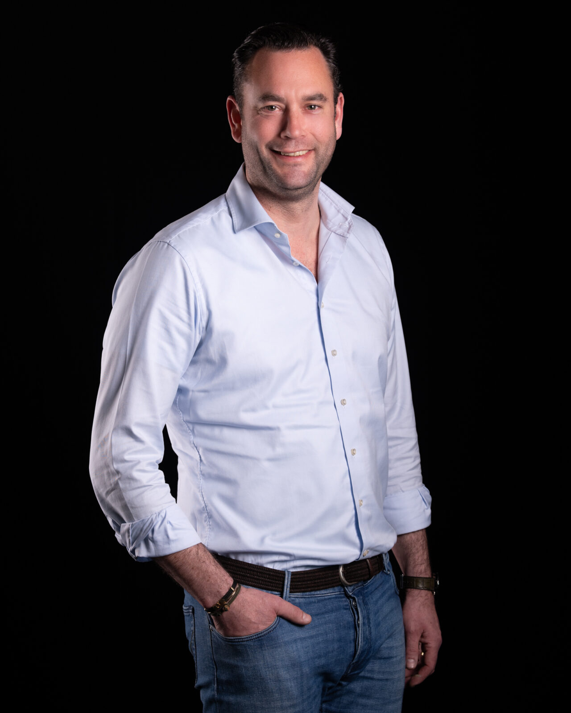

Twee generaties vakmanschap
Van Amsterdam naar Schoonhoven. Van vader op zoon. Al sinds 1980 maken wij met liefde sieraden die generaties meegaan.

Welkom in de Zilverstad
Wij verwelkomen u van harte op onze locatie in Schoonhoven, die sinds mei 2024 is geopend, na 35 jaar gevestigd te zijn in hartje Amsterdam. Gelegen aan de gracht op Haven nr. 70 bevindt zich onze winkel waar u terecht kunt voor alles wat met sieraden te maken heeft.
Van antiekrestauratie tot het vervaardigen van nieuwe juwelen, het bewonderen van onze eigen handgemaakte collectie tot het repareren van erfstukken die u het meest dierbaar zijn.
Neem contact opDe meeste juwelen zijn uniek en van de beste kwaliteit materialen en edelstenen gemaakt. Maar bovenal zijn ze met liefde voor het vak ontstaan. Kunt u niet meteen vinden wat u zoekt? Of heeft u een speciale wens? Dan kunt u in ons atelier met een van de goudsmeden overleggen wat de maatwerk mogelijkheden zijn. Onze werkplaats is goed zichtbaar vanaf de gevel van ons atelier, u kunt daarom met uw eigen ogen zien hoe wij aan uw juweel werken.
Eén familiebedrijf, twee generaties
Wiewel Goudsmeden heeft een geschiedenis die teruggaat tot 1980, toen Matthieu Wiewel besloot om zijn eigen goudsmederij te beginnen. Met zijn jarenlange ervaring als goudsmid was hij goed voorbereid op deze stap.
Acht jaren later, in 1988, opende Matthieu Wiewel zijn eigen winkel aan de Jacob Obrechtstraat 27. Na 35 jaar gevestigd te zijn in Amsterdam is het atelier in mei 2024 verhuisd naar Haven 70 te Schoonhoven.
In 2004 trad Thijs Wiewel, de zoon van Matthieu, officieel in dienst van het bedrijf. Hij had zijn opleiding gevolgd aan de Vakschool voor Edelsmeden en was klaar om zijn vader bij te staan. Samen werkten ze zij aan zij en zorgden ze voor de voortzetting van het vakmanschap en de traditie die het familiebedrijf kenmerkte.
Veertien jaar later, in 2018, ging Matthieu met pensioen en trad Thijs in zijn vaders voetsporen als eigenaar van Wiewel Goudsmeden. Het behoud van traditioneel vakmanschap en het inspelen op moderne trends in de sieradenindustrie blijven de kernwaarden van Wiewel Goudsmeden.

Matthieu Wiewel
“In 1972 ben ik als praktijkleerling, zonder enige opleiding, in het atelier van John van der Vet in Amsterdam begonnen. Hier leerde ik het vak van goudsmeden in al zijn facetten kennen. In 1980 begon ik voor mezelf en de winkel aan de Jacob Obrechtstraat opende ik in 1988. Jarenlang heb ik daar met veel plezier gewerkt aan het creëren van unieke sieraden. In 2018 was het tijd om het stokje over te dragen aan mijn zoon Thijs, die op dat moment al jarenlang met mij samenwerkte.”

Thijs Wiewel
Bekijk de collectie“Ik heb de liefde voor dit ambacht met de paplepel ingegoten gekregen. Ik keek altijd over de schouder van mijn vader mee. Later ging ik, vanzelfsprekend zou ik haast zeggen, naar de Vakschool Schoonhoven waar ik de kunst van het edelsmeden verder in de vingers kreeg. Sinds 2004 sta ik officieel naast mijn vader in de winkel en in 2018 heb ik het bedrijf overgenomen. Ik vind het heel bijzonder om in dit familiebedrijf de tweede generatie te zijn en ik ben er trots op het werk van mijn vader voort te zetten.”
Het Nederlands Gilde van Goudsmeden
Sinds december 2018 is Thijs met trots als jongste Meestergoudsmid aangesloten bij het Nederlands Gilde van Goudsmeden. Een enthousiaste vereniging vakmensen waar kwaliteit en vakmanschap voorop staat.
Hier kwam een serieuze ballotage bij kijken, waarbij een aantal werkstukken door een commissie positief zijn beoordeeld. Sieraden uit het atelier van Wiewel Goudsmeden mogen sindsdien naast het eigen meesterteken een extra stempel dragen met het logo van het gilde. Een teken van de hoogst haalbare kwaliteit.
Goud- en Zilversmidsgilde St. Eloy
Na onze verhuizing van Amsterdam naar Schoonhoven zijn wij ook aangesloten bij het Goud- en Zilversmidsgilde St. Eloy, een gilde wat al meer dan 150 jaar actief is om vakmanschap, duurzaamheid, ambacht en verbondenheid in Schoonhoven te behouden.
Het Gildeteken dat goud- en zilversmeden hiervoor mogen gebruiken staat als extra waarborg voor goud- en zilverkwaliteit uit Schoonhoven, de Zilverstad.